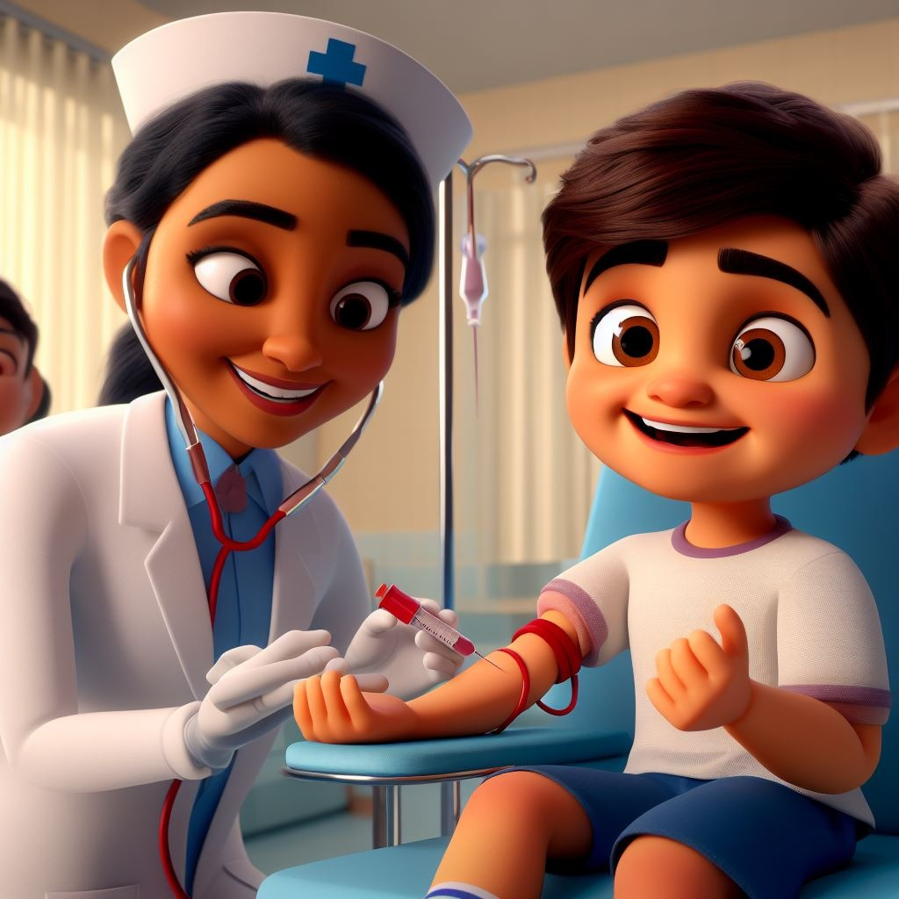
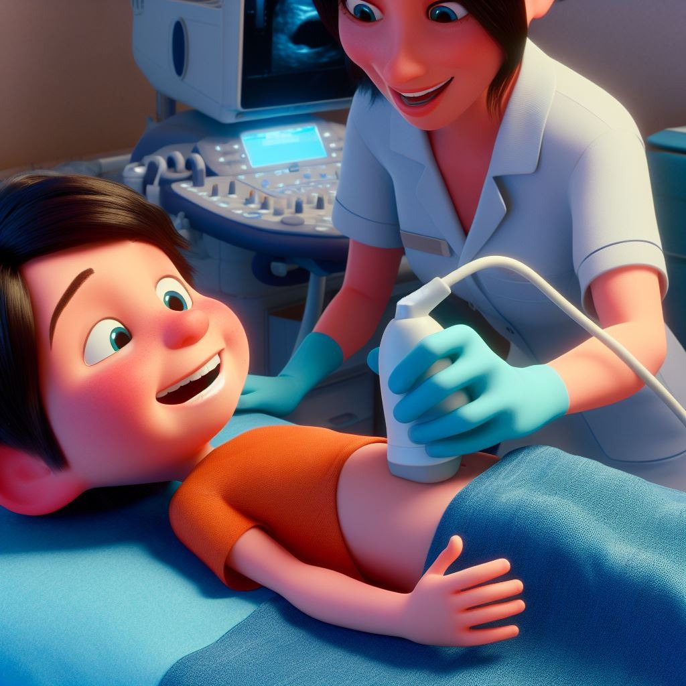
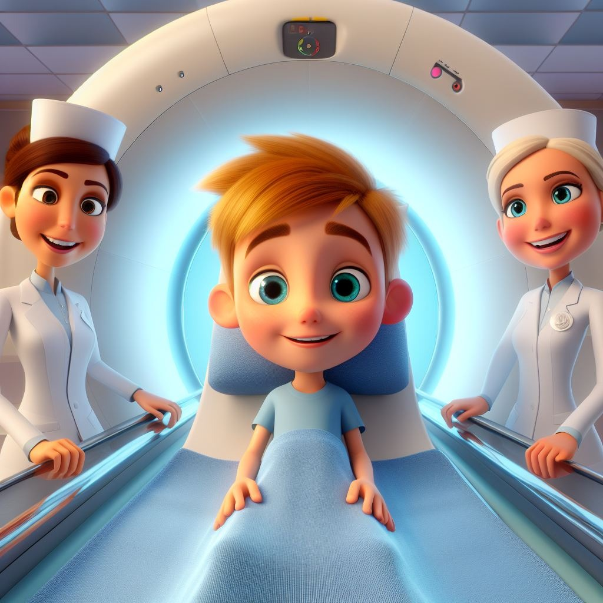
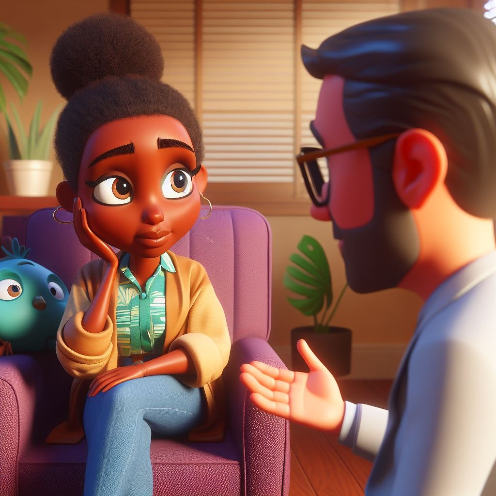
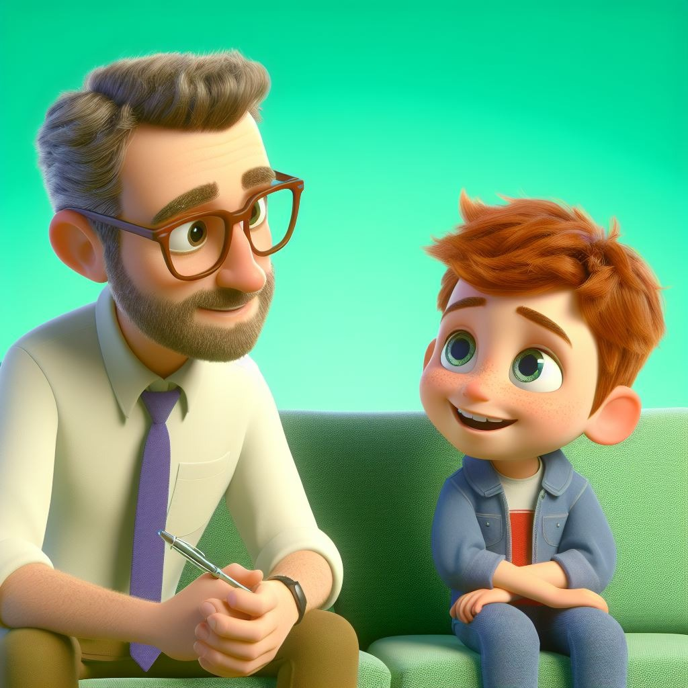

AV. DR. ENÉAS CARVALHO DE AGUIAR, 647, SÃO PAULO - SP
AV. DR. ENÉAS CARVALHO DE AGUIAR, 647, SÃO PAULO - SP
 (11) 2661-8500
(11) 2661-8500

 AV. DR. ENÉAS CARVALHO DE AGUIAR, 647, SÃO PAULO - SP
(11) 2661-8500
AV. DR. ENÉAS CARVALHO DE AGUIAR, 647, SÃO PAULO - SP
(11) 2661-8500

|  | Imagine que seu corpo é uma cidade e as células são os moradores. O exame de sangue é como um detetive que coleta informações da "rodovia" do sangue, onde as células viajam. Ele analisa essas pistas para garantir que todos os moradores estejam felizes e saudáveis. É como um check-up divertido para a cidade do seu corpo! Os médicos usam esse check-up para garantir que você esteja saudável e, se houver algum problema, eles podem ajudar a resolver. É um jeito simples de cuidar da sua saúde! |
| O ultrassom é como uma máquina de tirar fotos mágica que os médicos usam para ver o que está acontecendo dentro do nosso corpo. Eles espalham um gelzinho na pele, que é um pouco frio, e usam uma varinha especial que emite sons que não conseguimos ouvir. Esses sons são como ecos que voltam e ajudam os médicos a criar imagens do que está escondido lá dentro, como os órgãos. É uma forma legal de os médicos verem como tudo está funcionando sem precisar abrir nada, como um superpoder mágico! |  |
|  | Vamos imaginar que seu corpo é uma cidade incrível e a tomografia é como um mapa detalhado dessa cidade. Os médicos querem saber exatamente como são os prédios e ruas por dentro, então usam uma máquina especial. Essa máquina é como um superpoder secreto que tira muitas fotos rápidas enquanto você fica deitado. É como se fosse um super-herói espiando todos os cantinhos da cidade para garantir que tudo está em ordem. As fotos são como fatias de bolo que, quando colocadas juntas, criam um mapa 3D completo da sua cidade interna. Assim, os médicos podem ver todos os detalhes, como se estivessem dando uma espiadinha por dentro da sua cidade, sem precisar mexer em nada. Então, a tomografia é como um super-herói com um mapa especial para garantir que sua cidade (seu corpo) esteja sempre segura e saudável! |
O acompanhamento psicológico é muito importante no contexto de doenças, tanto para o paciente quanto para os acompanhantes.
O diagnóstico e tratamento podem trazer muitos sentimentos, como o medo, a ansiedade, a tristeza e frustações.
Muitas das vezes é preciso ter alterações na rotina, alguns pacientes e acompanhantes precisam passar muito tempo dentro de hospitais, que pode afetar no trabalho e nos estudos.
É importante lembrar que a saúde mental ajuda na aceitação de tratamentos.
Por isso o acompanhamento psicológico tem extrema importância nos tratamentos, por ajudar a lidar com esses momentos de decisões difíceis e ter um espaço que possa ser usado como um apoio para ajudar a melhorar a exaustão mental.
Agende já uma sessão: |
 |
Agende já uma sessão para o seu pequeno: |
 |
Bem-vindo à nossa seção de Apoio para Famílias,
um espaço projetado com carinho para oferecer suporte e recursos valiosos às famílias que enfrentam desafios no tratamento. Sabemos que cada jornada é única, e é por isso que criamos este ambiente acolhedor, onde as famílias podem se conectar, encontrar apoio local, participar de grupos de apoio e acessar informações essenciais.
Aqui, acreditamos que ninguém deve caminhar sozinho durante períodos difíceis. Nossa seção atua como um guia compassivo, conectando você a uma rede de recursos locais, facilitando o compartilhamento de experiências com outros membros da comunidade e disponibilizando informações úteis sobre o tratamento.
Seja sua família enfrentando desafios de saúde, educacionais ou sociais, nossa plataforma está aqui para oferecer um abraço virtual e recursos sólidos. Acreditamos que, juntos, podemos transformar esses desafios em oportunidades de crescimento, fortalecendo os laços que conectam nossas comunidades. Explore, conecte-se e descubra o apoio caloroso que você e sua família merecem. Estamos empenhados em ajudá-los a construir um caminho mais tranquilo e solidário rumo ao futuro.
Nossa comunidade é dedicada à transformação social e ao impacto positivo! Aqui, acreditamos que pequenas ações podem gerar grandes mudanças. Se você é apaixonado por fazer a diferença, queremos convidá-lo a se tornar parte integrante do nosso movimento.
Voluntários, Heróis do Dia a Dia: Sabemos que há inúmeras pessoas com o desejo sincero de contribuir para causas significativas. Se você é uma dessas pessoas, a inscrição como voluntário é o primeiro passo para fazer a diferença. Nossa plataforma oferece oportunidades de voluntariado em diversas áreas, desde educação e saúde até meio ambiente e apoio comunitário.
Ao se inscrever, você se conecta a projetos que refletem seus interesses e habilidades, proporcionando a oportunidade de impactar positivamente a vida das pessoas. Acreditamos que cada voluntário é um herói do dia a dia, e juntos podemos construir um mundo mais solidário e compassivo.
Se você representa uma organização não governamental (ONG) que está comprometida com uma causa nobre, convidamos você a se juntar a nós para amplificar seu impacto. Nossa plataforma oferece uma vitrine virtual para ONGs, fornecendo uma visibilidade valiosa para suas iniciativas e projetos.
Ao se cadastrar, sua ONG se torna parte de uma rede inspiradora, conectando-se a voluntários entusiasmados, potenciais parceiros e doadores generosos. Acreditamos que, fortalecendo causas, construímos parcerias duradouras que podem gerar mudanças significativas em nossas comunidades.
Campanhas são oportunidades de transformar empatia em ação tangível. Seja apoiando iniciativas locais, ajudando indivíduos em necessidade ou impulsionando projetos comunitários, cada contribuição é um passo em direção a um futuro mais solidário e compassivo. Não espere para ser parte da mudança que deseja ver no mundo.
Explore nossas campanhas, contribua, compartilhe e inspire-se. Juntos, podemos transformar vidas e criar um impacto duradouro. Faça a diferença agora, junte-se à nossa comunidade de mudança positiva!
Ao analisarmos o caso, vimos que por falta de compreensão e entendimento do exame, alguns pacientes e acompanhantes chegam ao hospital sem saber ao certo o que será realizado. Levando ao desconforto e ansiedade tanto do paciente quanto do acompanhante.
Pensando nisso foi desenvolvido a seção de procedimentos, onde estão descritos os processos de todos os exames, de forma lúdica e simples, junto com algumas imagens mostrando como funciona os exames para melhor compreensão dos pacientes e acompanhantes.
Também foi analisado que o uso da anestesia é bem frequente para a realização dos exames, isso se dá pelo medo que esses pacientes sentem e por já terem passado por situações traumáticasanteriormente, em outros processos que eles passaram para chegar aos seus diagnósticos.
Com isso foi criado a seção de avaliações, em que o paciente poderá avaliar o seu atendimento e o exame de acordo com as emoções, que são representadas pelos personagens de divertida mente, como o medo, a raiva, a alegria e a tristeza. Ele poderá descrever sugestões de melhora, isso será enviado para o seu prontuário, ajudando a equipe como realizar o próximo exame de forma mais agradável.
A grande parte dos acompanhantes são mães solo, que não tem uma grande rede de apoio e muitas da vezes tem que largar o trabalho ou reduzi-lo, para poder acompanhar os exames.
Por isso foi criado a seção de apoio familiar, onde ela poderá encontrar suporte e ajuda nas etapas do tratamento.
E com toda essa situação a saúde mental da maioria acaba sendo afetada de alguma forma, e a saúde mental é tão importante quanto a física.
Foi adicionado uma seção de apoio psicológico tanto para o paciente como para o acompanhante, tem as opções de atendimento online ou presencial, para facilitar o atendimento, já que as vezes os deslocamentos não são possíveis.